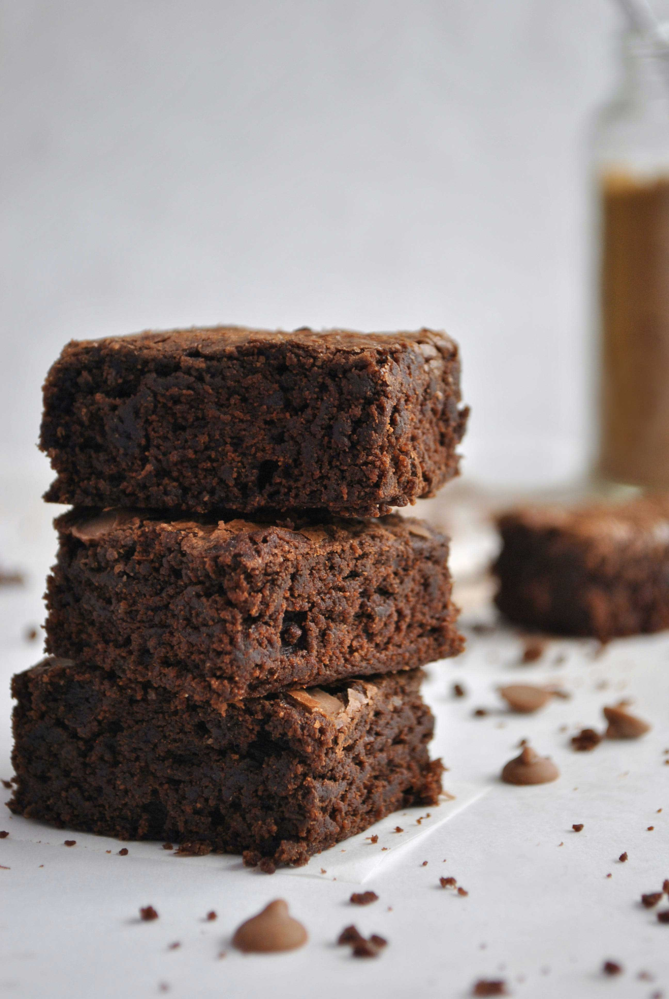

hi my name is sky 먹방 일기 입니다
food
diary
너무 오랜만입니다 ㅠㅠㅠㅠ 요즘
노트북
도 너무 느려지고 ㅠㅠㅠ 한창
시험 기간
이다 보니 바빠져서 ㅠㅠㅠㅠ
오랜만에
집에서 만든
브라우니
들고 왔어요!~~
(폰트가 새로 나와서 써보긴 했는데 귀엽긴 한데 뭔가 어색하네용 ㅎㅎㅎ) //
https://blog.naver.com/sujeeyoon/222236210485
빨간색 글자입니다.
빨간색 글자입니다.
